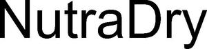

Trade Mark Journal No.2025/011 14 March 2025
WO0000001841394 (1,3,5,31,35)
Office of origin: Germany
Date of International Registration:3 February 2025
Date of designation in the UK:
3 February 2025

International priority date claimed: 7 August 2024
(Germany)
- Class 1
- Enzymes to assist in digestion for use in the manufacture of animal feeds; chemical additives and premixtures of chemical additives for the manufacture of pet food.
- Class 3
- Animal grooming preparations; pet stain removers; non-medicated mouth washes for pets; deodorants for pets; shampoos for pets [non-medicated grooming preparations]; shampoos for animals [non-medicated grooming preparations]; cosmetics for animals.
- Class 5
- Dietetic and energy-giving foods for medical purposes; dietary food supplements for medical purposes; medicated animal feed; medicated additives for animal foods; food supplements for veterinary use; nutritional supplements for livestock feed; dietary pet supplements in the form of pet treats; premixes containing food additives for animal feed, for medical purposes; premixes containing medicinal additives for food, for veterinary purposes; mineral supplements for feeding livestock; vitamins for animals; vitamin and mineral supplements for pets; dietary supplements for animals; protein supplements for animals; antibiotic food supplements for animals; pharmaceutical preparations for animals; trace element preparations for use by animals; feeding stimulants for animals; pharmaceutical preparations for the treatment of worms in pets; dietary supplements for pets in the nature of a powdered drink mix; dietary supplements for pets; mineral dietary supplements for animals; probiotic bacterial formulations for medical use; bacterial preparations for medical and veterinary use; disposable house training pads for pets; insecticidal animal shampoos; medicated shampoos for pets; antiparasitic collars for animals.
- Class 31
- Foodstuffs and fodder for animals; cereals preparations being food for animals; animal foodstuffs in the form of pieces; malt albumin for animal consumption [other than for medical use]; animal foodstuffs; formula animal feed; mixed animal feed; foodstuffs for dogs; pet food; foodstuffs for cats; animal foodstuffs for the weaning of animals; foodstuffs for animals containing botanical extracts; edible treats for animals; edible pet treats; edible chews for animals; beverages for animals; beverages for pets.
- Class 35
- Retail services in relation to fodder for animals; wholesale services in relation to fodder for animals; wholesale services in relation to animal grooming preparations; retail services in relation to animal grooming preparations; retail services via the Internet in the fields of pet food, pet food supplements, pet care products, veterinary medicinal products, homeopathic veterinary medicinal products, feeding bowls, dishes and troughs for animals.
NutraPet Systems Deutschland GmbH
Representative: Eisenführ Speiser Patentanwälte Rechtsanwälte PartGmbB, Am Kaffee-Quartier 3, 28217 Bremen, GERMANY